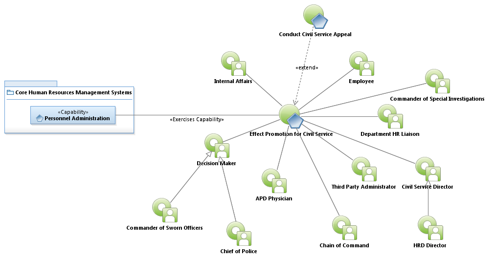
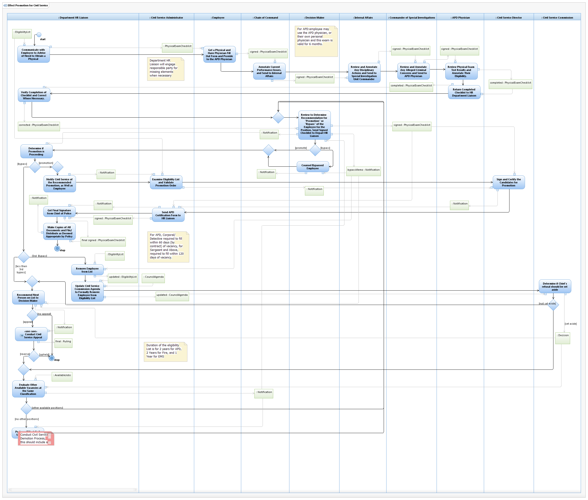

Use Case Model: Effect Promotion for Civil Service
Architect: First Last, IT Enterprise Architect
Date Last Modified: 4/09/2013
User Review: Gregg Olson, Leticia Paredes, Barry Cook
Date: 04/09/2013
Determine Public safety Civil Service Promotions as dictated by (Texas Local Government Code) TLGC 143.
Follow link to Role Definitions

Use Case Model: Effect Promotion for Civil Service

Activity Model: Effect Promotion for Civil Service
Activity Documentation
| Activity | Documentation |
|---|---|
Note: When the activity is self explanatory no documentation is provided.